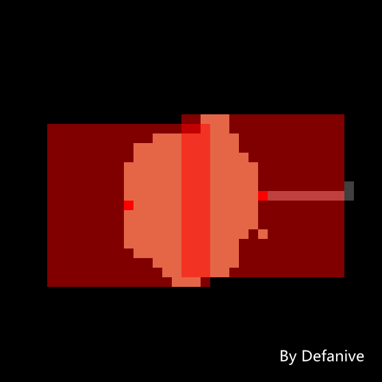

首页
上一页
240
241
242
243
244
245
245
246
247
248
249
250
下一页
末页
defanive2
无尽黑夜
14
接下来下一个怪物站只要把剩下的END岛覆盖了就可以了
于是决定把怪物站设置在左边
其实可以更加靠近中心的设置
——来自 MCLive

17615楼
2013-06-15 18:11
defanive2
无尽黑夜
14
不过在开工之前还是得收集一些南瓜的
2个怪物站必须要收集至少160个南瓜才能开工
打算先收集80个之后到刷怪笼边等边刷
先挂机一会，直播先暂停一下
晚上看情况再继续
——来自 MCLive
17623楼
2013-06-15 18:15
defanive2
无尽黑夜
14
晚上家里人一起出去吃饭的样子
所以估计可能又直播不了了。。大家还是洗洗睡吧
不过明天就有UHC了，所以。。
17634楼
2013-06-15 19:15
defanive2
无尽黑夜
14
UHC第三季第一集已经发布了
正在围观红绿队视频中
大家一起看，3个队的视频都很精彩
当然比赛到后面就越来越激烈了
http://tieba.baidu.com/p/2395458013
17669楼
2013-06-16 18:32
defanive2
无尽黑夜
14
UHC 第三季第二集 更新了！
战事仍然是非常激烈，当然欢乐仍然无限
http://tieba.baidu.com/p/2395458013
17702楼
2013-06-19 15:14
defanive2
无尽黑夜
14
生存看多了，可以来看看红石！
【视频】如何成为红石大神——五步曲
http://tieba.baidu.com/p/2404360753
大家可以尝试做一下里面的电路哦
还是挺有意思的
17706楼
2013-06-19 20:17
defanive2
无尽黑夜
14
好久没直播了，今天继续打MC
Larger than Earth！
PS MC里1格距离是被设置成现实中1米的
MC里可以支持的地图生成大小是非常大的
貌似是地球表面积的4倍？
——来自 MCLive
17707楼
2013-06-19 21:00
defanive2
无尽黑夜
14
最近一直在忙各自奇怪的事情
UHC第三季在发布中，渲染上传视频也花了不少时间
在喵服里准备+试玩了第四季
不过怎么说，我们来继续END改造这个大工程吧
PS 不过似乎我的网络十分不好
如果不换网络的话，可能没办法参加第四季了
——来自 MCLive
17711楼
2013-06-19 21:04
defanive2
无尽黑夜
14
经过地狱，取了一桶岩浆，来到END
两个怪物站的chunk坐标是(-7,1)和(7,0)
(7,0)就是END家的正下方，要运输怪物非常方便
但是(-7,1)就距离很远了
因此我们先造一条水路，方便运输怪物
——来自 MCLive
17715楼
2013-06-19 21:12
defanive2
无尽黑夜
14
(-7,1)的中心也就在这个地方
马克一下坐标，(-103,24)
——来自 MCLive
17716楼
2013-06-19 21:13
defanive2
无尽黑夜
14
不过怪物站肯定不能在岛上建
80个怪物的音效绝对会影响景色
不过这个问题很早计划时就考虑到了
END岛这里的y坐标是50+
因此我们可以把怪物站做到y=10附近
这样就不会听到怪物的音效了
——来自 MCLive
17717楼
2013-06-19 21:15
defanive2
无尽黑夜
14
刚刚去接了个电话。。
好吧，现在继续开工
首先怪物进入了END之后会生成在这里
所以我们要做的第一件事就是先把怪物用水流集中起来
——来自 MCLive
17720楼
2013-06-19 21:31
defanive2
无尽黑夜
14
如此做一个水源，这样怪物都冲向中间了
值得注意的是，每次进入END时都会刷新一次
因此这块5x5x3区域内的方块都会被清除
所以水源需要设在这区域之外
这样进入END之后，虽然中间的水流被清除了
但是立即更新了水源，水流又会重新出现
PS 家估计会被改得很乱
但是工程结束后会改回来的
——来自 MCLive
17721楼
2013-06-19 21:34
defanive2
无尽黑夜
14
然后把围墙改成2格高，防止逃逸
PS 主角必须得进入一次END怪物才会进行运动
但是进去的一瞬间就会被怪物疯狂攻击
不过被攻击后会有一段无敌时间，也就是主角变红的时刻
在这段无敌时间中是无法被再次伤害的
因此我们只要尽快用小黑珍珠飞出去就可躲避被杀死的厄运
PS PS 就算没办法躲避
被杀死一次之后怪物基本上都会被送走了
就算没有被送走，再多死几次就可以了
——来自 MCLive
17723楼
2013-06-19 21:37
defanive2
无尽黑夜
14
接下来就可以在这里做往下掉的通道了
准备把通道一直建到y=10
然后再横向把怪物一直运到怪物站
——来自 MCLive
17724楼
2013-06-19 21:39
defanive2
无尽黑夜
14
一直垂直往下之后就到了END岛的下方
接下来就用和小黑塔下建一样的办法
一桶岩浆一桶水，造一个柱子下去
——来自 MCLive
17725楼
2013-06-19 21:41
defanive2
无尽黑夜
14
首先往后一格倒岩浆
并且保证岩浆只是横向散开下坠
——来自 MCLive
17726楼
2013-06-19 21:42
defanive2
无尽黑夜
14
当岩浆掉落到最下面虚空时
将岩浆取回，此时岩浆柱仍然会停留很久
——来自 MCLive
17727楼
2013-06-19 21:43
defanive2
无尽黑夜
14
此时往后建一格，并且倒水
——来自 MCLive
17728楼
2013-06-19 21:43
defanive2
无尽黑夜
14
水和岩浆就会形成一条向下的鹅卵石柱
这个方法很常用，可以用于快速垂直建造
——来自 MCLive
17729楼
2013-06-19 21:45
defanive2
无尽黑夜
14
这样一条向下的岩石柱就形成了
——来自 MCLive
17730楼
2013-06-19 21:46
defanive2
无尽黑夜
14
接下来在后方也做一个柱子，这样方便下去
可以铺楼梯下，但是既然我们只是做一个空洞
这样下去就更加方便
——来自 MCLive
17731楼
2013-06-19 21:47
defanive2
无尽黑夜
14
毫无鸭梨的下到了y=10
从下方仰视END岛
感觉也是不一般
——来自 MCLive
17733楼
2013-06-19 21:49
defanive2
无尽黑夜
14
接下来顺便往下跳看看会不会伤血
有水流应该可以免疫很多掉落伤害的
如果可以的话，最后就不需要麻烦的做3格水缓冲了
毕竟也不能让僵尸摔死
——来自 MCLive
17739楼
2013-06-19 21:53
defanive2
无尽黑夜
14
下来的时候没有伤血，应该问题不大
当然开始建柱子和END出生点还是有一段高度的
从那上面跳下来才可以知道这样的水流够不够用
——来自 MCLive
17741楼
2013-06-19 21:55
defanive2
无尽黑夜
14
这样向下的通道就建好了
现在跳下去试试看看会不会死
——来自 MCLive
17743楼
2013-06-19 21:57
defanive2
无尽黑夜
14
一点血也没伤，成功幸存
接下来就只需要水平建通道
一直建到预定怪物站的位置即可
——来自 MCLive
17744楼
2013-06-19 21:58
defanive2
无尽黑夜
14
目标地点是(-103,24)
距离还有200格左右
希望身上带的鹅卵石足够
——来自 MCLive
17746楼
2013-06-19 22:00
defanive2
无尽黑夜
14
终于一直建到(0,0)了
不过离目的地还有100m左右
背包里鹅卵石已经用光了，只剩一组
先回去取一点资源再继续
PS 大工程啊
——来自 MCLive
17756楼
2013-06-19 22:09
defanive2
无尽黑夜
14
剩下一组鹅卵石垫过去
——来自 MCLive
17757楼
2013-06-19 22:10
首页
上一页
240
241
242
243
244
245
245
246
247
248
249
250
下一页
末页